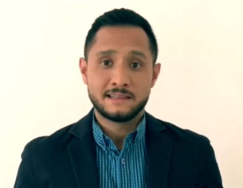

Hola Soy Robert Garcia
MI CURRICULUM VITAE EN LINEA
Mi Presentacion
Breve presentacion en video, y resumen de formacion y habilidades
Datos Personales
Nombre y Apellido: Robert Garcia
Edad: 29 años
Fecha de nacimiento: 19 de Septiembre de 1993
Estado Civil: Soltero
Direccion: 2323 Oak Lawn Ave
Telefono:(415) 338-8997
Formacion Academica
Curso de Experto en Análisis y Gestión de Conflictos en Recursos Humanos
Máster Universitario en Dirección de Recursos Humanos y Diplomatura en Relaciones Laborales.
Habilidades Profesionales
Visión comercial.
Habilidades negociadoras.
Coordinación y gestión de equipos humanos.
Capacidad de comunicación digital.
Dominio de las redes sociales.
Gestión de recursos humanos en la Red
Idiomas
Español: nativo
Inglés: nivel B2 acreditado por la Escuela Oficial de Idiomas de Valladolid
Experiencia Laboral
Analista de recursos humanos en Sane Riego S. A.
Técnico de recursos humanos en Técnicas Exclusivas Industriales S. A., Valladolid.
Técnico en relaciones laborales en Promolid S. A., Valladolid.